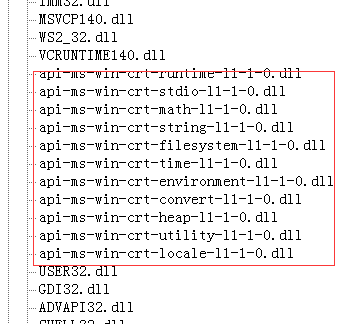

spwork
Hello, everyone. I am a novice. I want to ask, I compiled a little thing with urho3d, and used release mode, and then generated exe files. There were more than a lot of inexplicable DLL files. I want to ask how to make the DLL files as less as possible.